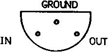

INMC News |
Winter 1978 · Issue 1 |
| Page 1 of 9 |
|---|
We held our third seminar, attended by over 200 people, at the Dragonara Hotel in Bristol on October 14th. This time the lectures were biased towards software and the titles were:
Is there a computer in the house? – Guy Kemey, Computing
Microprocessors and Microprocessing – Vincent Tseng, ICL Dataskil
Microprocessor Software – Jim Ayres, Harrow Technical College
Assemblers, High Level languages and Operating Systems – Tony Rundle
Nascom Microcomputers Ltd.
Interfacing – Paul Lister, Sussex University
Reprints of the papers will shortly be available at a price of £1.50 each and are recommended reading for Nascom owners.
Tiny Basic, Zeap and a prototype 32K Nascom were on display together with a number of applications, programs including games and a text processing system developed by Dataskil. We would like to thank everyone who came for helping to make a thoroughly enjoyable day.
First of all, an apology for the delay producing the extension RAM and buffer boards. We have heard it said that there are no problems, only opportunities. Well, we have been beset by opportunities – some technical, some manufacturing. However the design is complete, pre-production prototypes have been tested, and first deliveries will be mde in December.
The buffer board generates the Nasbus. This is a 77 way bus with some unique features. In particular:
We are confident that the Nasbus will become a significant feature of the microcomputer scene because of the simplicity, its low cost, and ability to cope with the next generation of microprocessors. A full specification will be available with the buffer boards in December.
First of all, our apologies. A small batch of pcb’s escaped with the ground and output of IC1 incorrectly marked, and the +12V and −12V markings reversed. IC1 should be marked as
and the correct output order is
−12V
− 5V
+12V
+ 5V
0
| Page 1 of 9 |
|---|